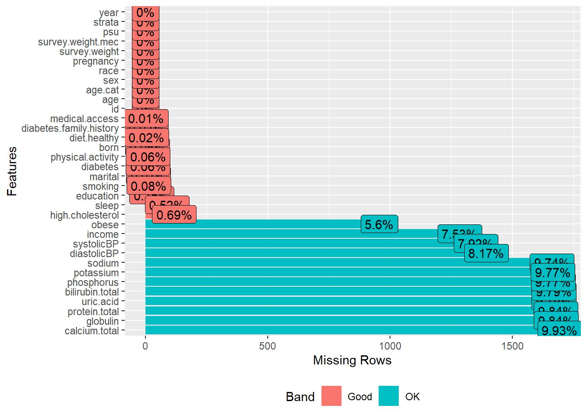
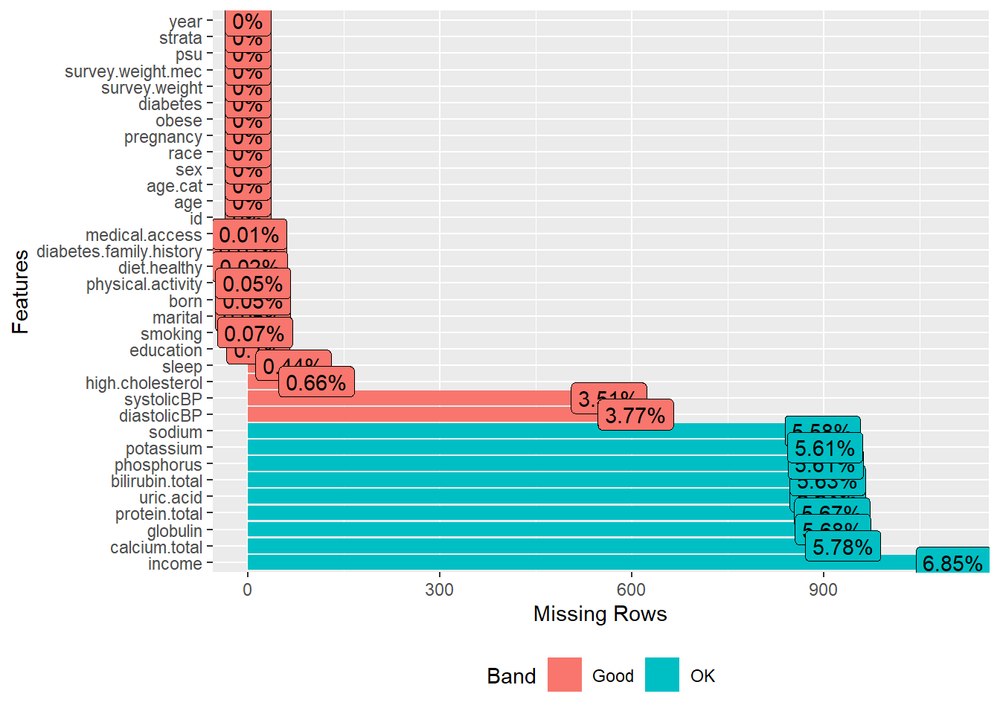
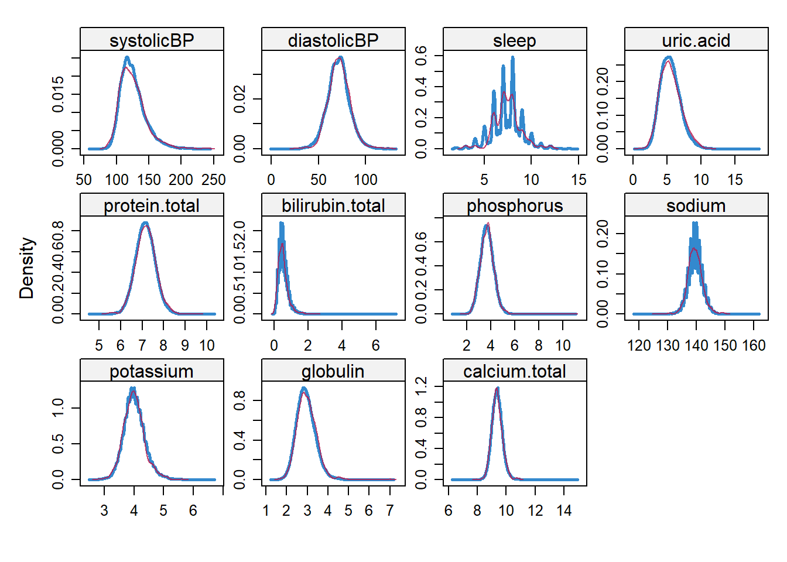

load("data/analytic13recoded.RData")
load("data/analytic15recoded.RData")
load("data/analytic17recoded.RData")Appendix G — Merge NHANES 2013-2018 datasets
G.1 Analytic dataset
G.1.1 Load 2013-18 datasets
G.1.2 Merge 2013-18 datasets
# adults aged 20 years or more
data.merged0 <- rbind(analytic13, analytic15, analytic17)
dim(data.merged0)
#> [1] 17057 34
data.merged <- droplevels(data.merged0)G.1.3 Check missingness
plot_missing(data.merged)
# profile_missing(data.merged)
dim(data.merged)
#> [1] 17057 34
data.complete <- na.omit(data.merged)
dim(data.complete)
#> [1] 13505 34
data.merged.x <- data.merged[!is.na(data.merged["obese"]),]
dim(data.merged.x)
#> [1] 16101 34
data.merged.xy <- data.merged.x[!is.na(data.merged.x["diabetes"]),]
dim(data.merged.xy)
#> [1] 16091 34
plot_missing(data.merged.xy)
imp1 <- mice(data.merged.xy, m = 1, maxit = 10, method = "pmm")
#>
#> iter imp variable
#> 1 1 education marital income born diabetes.family.history smoking diet.healthy physical.activity medical.access systolicBP diastolicBP sleep uric.acid protein.total bilirubin.total phosphorus sodium potassium globulin calcium.total high.cholesterol
#> 2 1 education marital income born diabetes.family.history smoking diet.healthy physical.activity medical.access systolicBP diastolicBP sleep uric.acid protein.total bilirubin.total phosphorus sodium potassium globulin calcium.total high.cholesterol
#> 3 1 education marital income born diabetes.family.history smoking diet.healthy physical.activity medical.access systolicBP diastolicBP sleep uric.acid protein.total bilirubin.total phosphorus sodium potassium globulin calcium.total high.cholesterol
#> 4 1 education marital income born diabetes.family.history smoking diet.healthy physical.activity medical.access systolicBP diastolicBP sleep uric.acid protein.total bilirubin.total phosphorus sodium potassium globulin calcium.total high.cholesterol
#> 5 1 education marital income born diabetes.family.history smoking diet.healthy physical.activity medical.access systolicBP diastolicBP sleep uric.acid protein.total bilirubin.total phosphorus sodium potassium globulin calcium.total high.cholesterol
#> 6 1 education marital income born diabetes.family.history smoking diet.healthy physical.activity medical.access systolicBP diastolicBP sleep uric.acid protein.total bilirubin.total phosphorus sodium potassium globulin calcium.total high.cholesterol
#> 7 1 education marital income born diabetes.family.history smoking diet.healthy physical.activity medical.access systolicBP diastolicBP sleep uric.acid protein.total bilirubin.total phosphorus sodium potassium globulin calcium.total high.cholesterol
#> 8 1 education marital income born diabetes.family.history smoking diet.healthy physical.activity medical.access systolicBP diastolicBP sleep uric.acid protein.total bilirubin.total phosphorus sodium potassium globulin calcium.total high.cholesterol
#> 9 1 education marital income born diabetes.family.history smoking diet.healthy physical.activity medical.access systolicBP diastolicBP sleep uric.acid protein.total bilirubin.total phosphorus sodium potassium globulin calcium.total high.cholesterol
#> 10 1 education marital income born diabetes.family.history smoking diet.healthy physical.activity medical.access systolicBP diastolicBP sleep uric.acid protein.total bilirubin.total phosphorus sodium potassium globulin calcium.total high.cholesterol
#> Warning: Number of logged events: 210
densityplot(imp1)
data.imputed <- complete(imp1, action = 1)
dim(data.imputed)
#> [1] 16091 34G.1.4 Summary statistics
round(prop.table(table(data.complete$obese))*100, 2)
#>
#> No Yes
#> 59.88 40.12
vars <- c(
# Demographic
"age", "age.cat", "sex", "education", "race",
"marital", "income", "born",
# Diabetes history
"diabetes.family.history",
# Smoking
"smoking",
# Diet
"diet.healthy",
# Physical activity
"physical.activity",
# Access to routine healthcare
"medical.access",
# Blood pressure and Hypertension
"systolicBP", "diastolicBP",
# Sleep
"sleep",
# Laboratory
"uric.acid", "protein.total", "bilirubin.total", "phosphorus",
"sodium", "potassium", "globulin", "calcium.total",
"high.cholesterol",
# Survey year
"year"
)
tab1 <- CreateTableOne(vars = vars,
strata = "obese",
data = data.complete,
test = FALSE,
addOverall = TRUE)
print(tab1,
showAllLevels = TRUE,
smd = TRUE)
#> Stratified by obese
#> level Overall
#> n 13505
#> age (mean (SD)) 49.69 (17.51)
#> age.cat (%) 20-49 6725 (49.8)
#> 50-64 3606 (26.7)
#> 65+ 3174 (23.5)
#> sex (%) Male 6477 (48.0)
#> Female 7028 (52.0)
#> education (%) Less than high school 2741 (20.3)
#> High school 7348 (54.4)
#> College graduate or above 3416 (25.3)
#> race (%) White 5245 (38.8)
#> Black 2758 (20.4)
#> Hispanic 3320 (24.6)
#> Others 2182 (16.2)
#> marital (%) Never married 2435 (18.0)
#> Married/with partner 8151 (60.4)
#> Other 2919 (21.6)
#> income (%) less than $20,000 2615 (19.4)
#> $20,000 to $74,999 7024 (52.0)
#> $75,000 and Over 3866 (28.6)
#> born (%) Born in US 9440 (69.9)
#> Other place 4065 (30.1)
#> diabetes.family.history (%) No 10826 (80.2)
#> Yes 2679 (19.8)
#> smoking (%) Never smoker 7728 (57.2)
#> Previous smoker 3230 (23.9)
#> Current smoker 2547 (18.9)
#> diet.healthy (%) Poor or fair 4242 (31.4)
#> Good 5499 (40.7)
#> Very good or excellent 3764 (27.9)
#> physical.activity (%) No 10612 (78.6)
#> Yes 2893 (21.4)
#> medical.access (%) No 2308 (17.1)
#> Yes 11197 (82.9)
#> systolicBP (mean (SD)) 124.82 (18.36)
#> diastolicBP (mean (SD)) 70.89 (11.58)
#> sleep (mean (SD)) 7.37 (1.56)
#> uric.acid (mean (SD)) 5.43 (1.45)
#> protein.total (mean (SD)) 7.13 (0.46)
#> bilirubin.total (mean (SD)) 0.55 (0.30)
#> phosphorus (mean (SD)) 3.69 (0.57)
#> sodium (mean (SD)) 139.53 (2.49)
#> potassium (mean (SD)) 4.01 (0.36)
#> globulin (mean (SD)) 2.92 (0.46)
#> calcium.total (mean (SD)) 9.36 (0.37)
#> high.cholesterol (%) No 8707 (64.5)
#> Yes 4798 (35.5)
#> year (mean (SD)) 8.95 (0.81)
#> Stratified by obese
#> No Yes SMD
#> n 8087 5418
#> age (mean (SD)) 49.48 (18.15) 50.00 (16.52) 0.030
#> age.cat (%) 4076 (50.4) 2649 (48.9) 0.080
#> 2048 (25.3) 1558 (28.8)
#> 1963 (24.3) 1211 (22.4)
#> sex (%) 4125 (51.0) 2352 (43.4) 0.153
#> 3962 (49.0) 3066 (56.6)
#> education (%) 1609 (19.9) 1132 (20.9) 0.237
#> 4111 (50.8) 3237 (59.7)
#> 2367 (29.3) 1049 (19.4)
#> race (%) 3159 (39.1) 2086 (38.5) 0.400
#> 1420 (17.6) 1338 (24.7)
#> 1780 (22.0) 1540 (28.4)
#> 1728 (21.4) 454 ( 8.4)
#> marital (%) 1519 (18.8) 916 (16.9) 0.083
#> 4924 (60.9) 3227 (59.6)
#> 1644 (20.3) 1275 (23.5)
#> income (%) 1524 (18.8) 1091 (20.1) 0.131
#> 4058 (50.2) 2966 (54.7)
#> 2505 (31.0) 1361 (25.1)
#> born (%) 5247 (64.9) 4193 (77.4) 0.279
#> 2840 (35.1) 1225 (22.6)
#> diabetes.family.history (%) 6739 (83.3) 4087 (75.4) 0.196
#> 1348 (16.7) 1331 (24.6)
#> smoking (%) 4654 (57.5) 3074 (56.7) 0.119
#> 1795 (22.2) 1435 (26.5)
#> 1638 (20.3) 909 (16.8)
#> diet.healthy (%) 1981 (24.5) 2261 (41.7) 0.438
#> 3346 (41.4) 2153 (39.7)
#> 2760 (34.1) 1004 (18.5)
#> physical.activity (%) 6445 (79.7) 4167 (76.9) 0.068
#> 1642 (20.3) 1251 (23.1)
#> medical.access (%) 1546 (19.1) 762 (14.1) 0.136
#> 6541 (80.9) 4656 (85.9)
#> systolicBP (mean (SD)) 123.20 (18.84) 127.22 (17.33) 0.222
#> diastolicBP (mean (SD)) 69.99 (11.32) 72.23 (11.84) 0.193
#> sleep (mean (SD)) 7.41 (1.53) 7.32 (1.61) 0.056
#> uric.acid (mean (SD)) 5.20 (1.37) 5.77 (1.49) 0.397
#> protein.total (mean (SD)) 7.14 (0.47) 7.11 (0.45) 0.055
#> bilirubin.total (mean (SD)) 0.58 (0.30) 0.51 (0.29) 0.239
#> phosphorus (mean (SD)) 3.72 (0.56) 3.65 (0.58) 0.114
#> sodium (mean (SD)) 139.58 (2.47) 139.44 (2.52) 0.055
#> potassium (mean (SD)) 4.00 (0.36) 4.02 (0.36) 0.045
#> globulin (mean (SD)) 2.87 (0.45) 3.00 (0.45) 0.306
#> calcium.total (mean (SD)) 9.39 (0.37) 9.32 (0.37) 0.177
#> high.cholesterol (%) 5436 (67.2) 3271 (60.4) 0.143
#> 2651 (32.8) 2147 (39.6)
#> year (mean (SD)) 8.93 (0.81) 8.99 (0.81) 0.083G.2 Proxy data from ICD10 codes
dat.proxy.long <- rbind(rx2013, rx2015, rx2017)
dat.proxy.long$icd10 <- NULL
# Rename 3 digits ICD-10 codes as icd10
colnames(dat.proxy.long)[names(dat.proxy.long)=="icd10.new"] <- "icd10"
# Delete codes associated with exposure and outcome
dat.proxy.long <- subset(dat.proxy.long, icd10 != "E66") # Overweight and obesity
dat.proxy.long <- subset(dat.proxy.long, icd10 != "O24") # Gestational diabetes mellitus
dat.proxy.long <- subset(dat.proxy.long, icd10 != "E10") # Type 1 diabetes mellitus
dat.proxy.long <- subset(dat.proxy.long, icd10 != "E11") # Type 2 diabetes mellitusG.3 Mortality data
Mortality data obtained from 2019 Public-Use Linked Mortality Files
G.3.1 Mortality data 2013-14
mort2013 <- read_fwf(file = "data/Mortalitydata/NHANES_2013_2014_MORT_2019_PUBLIC.dat",
col_types = "iiiiiiii",
fwf_cols(id = c(1,6),
mort_eligstat = c(15,15),
mort_stat = c(16,16),
mort_ucod_leading = c(17,19),
mort_diabetes = c(20,20),
mort_hyperten = c(21,21),
mort_permth_int = c(43,45),
mort_permth_exm = c(46,48)),
na = c("", "."))G.3.2 Mortality data 2015-16
mort2015 <- read_fwf(file = "data/Mortalitydata/NHANES_2015_2016_MORT_2019_PUBLIC.dat",
col_types = "iiiiiiii",
fwf_cols(id = c(1,6),
mort_eligstat = c(15,15),
mort_stat = c(16,16),
mort_ucod_leading = c(17,19),
mort_diabetes = c(20,20),
mort_hyperten = c(21,21),
mort_permth_int = c(43,45),
mort_permth_exm = c(46,48)),
na = c("", "."))G.3.3 Mortality data 2017-18
mort2017 <- read_fwf(file = "data/Mortalitydata/NHANES_2017_2018_MORT_2019_PUBLIC.dat",
col_types = "iiiiiiii",
fwf_cols(id = c(1,6),
mort_eligstat = c(15,15),
mort_stat = c(16,16),
mort_ucod_leading = c(17,19),
mort_diabetes = c(20,20),
mort_hyperten = c(21,21),
mort_permth_int = c(43,45),
mort_permth_exm = c(46,48)),
na = c("", "."))G.3.4 Merging mortality datasets
dat.mortality <- rbind(mort2013, mort2015, mort2017)
table(dat.mortality$mort_eligstat, useNA = "always")
#>
#> 1 2 3 <NA>
#> 17883 11439 78 0
#1 = "Eligible"
#2 = "Under age 18, not available for public release"
#3 = "Ineligible"G.4 Save dataset for later use
save(data.merged,
data.merged.xy,
data.imputed,
data.complete,
dat.proxy.long,
dat.mortality,
file = "data/analytic3cycles.RData")